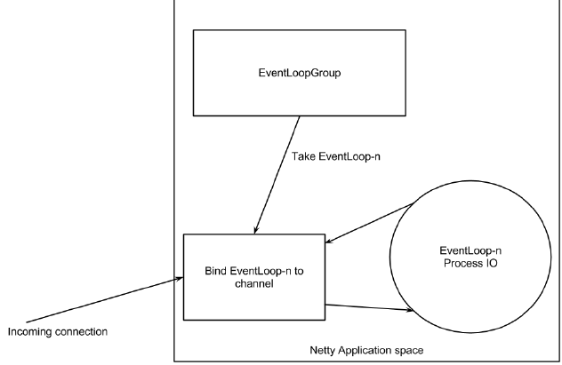
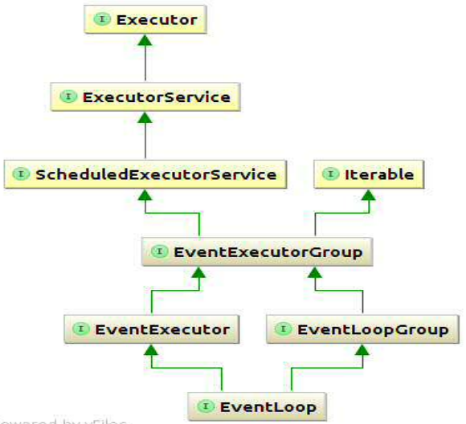
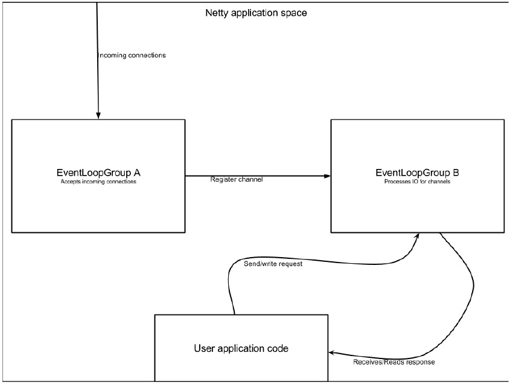
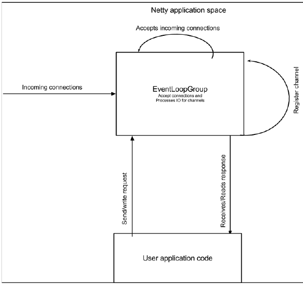
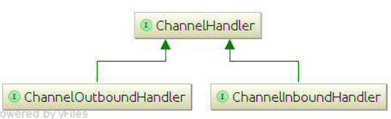
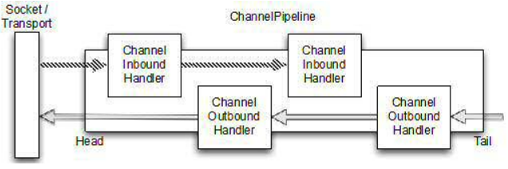

Netty 组件：
- Bootstrap / ServerBootstrap
- EventLoop
- EventLoopGroup
- ChannelPipeline
- Channel
- Future / ChannelFuture
- ChannelInitializer
- ChannelHandler
接下来将会在本章对上面组件进行介绍，为了避免分散地介绍它们，我们将详细说明它们是如何在一起工作的。
Netty Crash Course
一个 Netty 程序开始于一个 Bootstrap 类，Bootstrap 是由 Netty 提供的可以让我们方便配置 Netty 的构造类。
为了允许多种协议和各种处理数据的方式，Netty 提供了 handlers 处理类。如它们名字那样，是用于处理指定”事件“或事件集合。
一种常见的类型就是 ChannelInboundHandler。你可以决定如何处理 ChannelInboundHandler 接收到的信息。当你的程序需要提供响应时，你也许要把 ChannelInboundHandler 内部的数据 写/冲洗 到外面。换句话说，你的程序的业务逻辑一般就写在 ChannelInboundHandler。
当 Netty 连接客户端或绑定服务端时，它需要知道如何去处理发送或接收到的数据。这是通过各种类型的处理器完成的，Netty 提供了名为 ChannelInitializer 去配置这些处理器。ChannelInitializer 的职责就是为 ChannelPipeline 添加 ChannelHandler 的实现。当你发送和接收消息时，这些处理器会决定如何对待这些消息。一个 ChannelInitializer 本身也是一个 ChannelHandler，当向 ChannelPipeline 添加完其他处理器后，就会自动将自己移除。
所有的 Netty 程序都是基于 ChannelPipeline，ChannelPipeline 和 EventLoop 以及 EventLoopGroup 的关系很接近，因为它们三个都是和事件和事件处理有关。
EventLoops 是为 Channel 处理 IO 操作。单个 EventLoop 通常会为多个 Channels 处理事件。EventLoopGroup 本身会包含多于一个的 EventLoop，可以被用于获取一个 EventLoop。
Channel 是一个 socket 连接或一些用于 IO 操作的组件的表现形式，因此这也是为什么会由 EventLoop 所管理。
所有在 Netty 的 IO 操作都是异步的。所以当我们连接一台主机的时候，也是默认异步的，包括写/发送消息。这意味着操作不会被立即执行，而是过后执行。因为你不可能在它返回后就知道一个操作是成功还是失败，但又需要过后检查成功与否，所以就要去注册监听器。为了改正这点，Netty 使用了 Futures 和 ChannelFutures。这个 future 会被用于注册一个监听器，在一个操作出错或成功完成时就会收到提示。
Channels，Events 和 IO
下图展示了 Netty 有 EventLoopGroups，这些组有一个或多个 EventLoop。可以把 EventLoops 当成为 channel 执行真实工作的线程。

EventLoop 和 线程 的关系
在 EventLoop 的生命周期里，它总是一个单独的线程。
当一个 channel 被注册了，Netty 会将 channel 的整个生命周期都绑定到单个 EventLoop（相当于单个线程）。这就是为什么你的程序不用同步 Netty IO 操作，因为所有给到 channel 的 IO 都会被同一个线程执行。

EventLoop 和 EventLoopGroup 的关系第一感觉很奇怪是吧？因为我们说过 EventLoopGroup 包含一个或多个 EventLoop，但从图来看，EventLoop 实际上是 EventLoopGroup 的子接口，所以也可以说 EventLoop 是一个 EventLoopGroup。
BootStrapping：什么/为什么
Netty 的 BootStrapping 是对你的 Netty 应用进行配置的过程。当你需要通过主机号和端口连接到客户端，或连接到给定端口的服务端时，用 Bootstrap。像之前说过的一样，Bootstraps 有两种类型，一种用于客户端（也可以用于 DatagramChannel）（简略称为 Bootstrap）；另一种用于服务端（称为ServerBootstrap）。无论你的应用用的是什么协议，唯一决定你用哪个 Bootstrap 的是你要创建的是客户端还是服务端。
这两种 Bootstraps 有很多类似的地方，实际上，相似的比不同的地方要多。下表展示了一些关键的相似点和不同点：
| 相似点 | Bootstrap | ServerBootstrap |
|---|---|---|
| 职责 | 连接到远程主机和端口 | 绑定本地端口 |
| EventLoopGroups 数量 | 1 | 2 |
使用 Bootstrap，你显然要调用 connect() 连接；但你也可以调用 bind()，之后再使用 Channel 进行连接，bind() 返回的是 ChannelFuture。
客户端 Bootstraps/applications 使用1个 EventLoopGroup，而 ServerBootstrap 使用2个（实际上可以使用同一个 EventLoopGroup 实例）。
1个 ServerBootstrap 可以想成有2套 channels，第一套包含一个代表服务端本身 socket 的 ServerChannel，其已经绑定本地端口；第二套包含所有
代表连接的 Channel，其连接已被 accepted。

上图中，EventLoopGroup A 的唯一目的就是接受连接，然后把它们传到 EventLoopGroup B 中。Netty 可以用不同的两个组，是因为当应用在接受大量连接时，单个 EventLoopGroup 会因为忙于处理已接受的连接而不能在合理时间内去接受新连接，使其成为瓶颈。最终的结果就是一些连接出现 timeout。而通过两个 EventGroup，所有的都可以被 accepted，甚至在极端高负荷下，因为 EventLoops 正在接受的连接不会和已经接受的连接一样被共享。
EventLoopGroup 和 EventLoop
EventLoopGroup 可能包含多个 EventLoop。每个 Channel 一旦被创建，就会有一个 EventLoop 去绑定它。一个 EventLoopGroup 如果包含的 EventLoops 比 Channels 更少，那么一些 Channel 就会共享同一个 EventLoop。这意味着让 EventLoop 在一个 Channel 上保持忙碌，就会影响到其他绑定到这个 EventLoop 的 Channel 处理。
这也是为什么你 不能 阻塞 EventLoop。
下图展示了如果你打算使用同一个 EventLoopGroup 实例两次去配置 Netty 服务端所带来的不同：

Netty 允许使用同一个 EventLoopGroup 去处理 IO 和接受连接。这在大多数情况下可以正常工作。
Channel 处理器和数据流
我们需要看看数据在发送和接受时都发生了什么。为了理解这个过程，就需要先理解处理器是什么。处理器是依靠前面所说的 ChannelPipeline 去指定它们的执行顺序的。而不定义好 ChannelPipeline 就无法明确处理器，不定义好 ChannelHandlers 就无法明确 ChannelPipeline。无需多说，就是我们要处理好它们每一个的定义。
把它们合到一起：ChannelPipeline 和 处理器
很多情况下，Netty 的 ChannelHandler 是我们处理最多的，虽然你没有意识到。如果你正在使用 Netty，那至少里面会有一个 ChannelHandler。换句话说，它们是很多东西的关键。所以它们到底是什么？很难去定义 ChannelHandler，因为它们太普通了，可以把它们想象成处理到来数据和通过 ChannelPipeline 的一些代码。

数据流在 Netty 中有两个方向，如接口定义的两个：“入”（ChannelInboundHandler）和“出”（ChannelOutboundHandler）处理器。数据从用户应用到远程节点就被认为是“出”。相反的，从远程节点到用户应用就是“入”。
为了使得数据从一个终点到另一个终点，一个或多个 ChannelHandler 就要在多个地方操控数据。这些 ChannelHandlers 要被添加到应用中的 Bootstrap 部分，它们被添加的顺序就决定了它们操控数据的顺序。
指定顺序的 ChannelHandler 排列可以看成是 ChannelPipeline。换句话说，ChannelPipeline 就是一系列的 ChannelHandler 排列。每一个 ChannelHandler 在数据上执行它们的动作（如果它能处理，比如入的数据只能被 ChannelInboundHandler 处理），然后再将改变过的数据传递到在 ChannelPipeline 中的下一个 ChannelHandler，直到没有剩余的 ChannelHandler。
下图展示了 ChannelPipeline 的排序：

正如图中展示，ChannelInboundHandler 和 ChannelOutboundHandler 可以在 ChannelPipeline 中混合使用。
在该 ChannelPipeline 中，如果消息或任何其他”入“事件被读取，就要从 ChannelPipeline 的 head 开始，然后被传进第一个 ChannelInboundHandler 中。这个 ChannelInboundHandler 会处理这个事件 或 将它传到下一个 ChannelInboundHandler。一旦 ChannelPipeline 中没有 ChannelInboundHandler，就到达了 ChannelPipeline 的 tail 尾部，也就意味着之后不用再进行处理了。
反过来也是一样的，任何”出“事件都会从 ChannelPipeline 的 tail 开始，然后被传到”最后“一个 ChannelOutboundHandler，之后和 ChannelInboundHandler 是一样的。一旦没有更多的 ChannelOutboundHandler 可以被用于传递事件，也就到了正式的传输（也许是网络 socket）。
你可能会想，如果 outbound 和 inbound 的操作是不同的，它们是怎么在同一个 ChannelPipeline 工作的？请记住 outbound 和 inbound 处理器是继承自 ChannelHandler 的不同接口。这意味着 Netty 可以忽略任何不是特定类型的处理器，因此不是特定的就不能处理给定的操作。所以在 outbound 事件中，ChannelInboundHandler 就会被忽略，因为 Netty 知道每个处理器，是来自 ChannelInboundHandler 还是 ChannelOutboundHandler。
一旦 ChannelHandler 被添加进 ChannelPipeline，就会得到 ChannelHandlerContext。通常获得该对象的引用并使用是安全的，但在 datagram 数据包协议（UDP）中使用就不对了。这个对象可以被用于获得底层的 channel，所以你可以用 ChannelHandlerContext 来写/发消息。这意味着在 Netty 中有两种发送消息的方法。你可以直接向 channel 写消息或者向 ChannelHandlerContext 对象写消息。它们的不同处就是：向 channel 直接写是从 ChannelPipeline 的 tail 开始的，而向 context 对象写是从 ChannelPipeline 的下一个 Handler 开始的。
加解码密和业务逻辑：进一步了解处理器
如前面说的，有很多不同类型的处理器。具体到每一个就依赖于它们所继承的基类。在 Pipeline 中，每个处理器都有义务去把 Netty 事件传递到下一个处理器中，而 Netty 提供了一系列的 ”Adapter“ 类，可以使得事情变得简单些。使用 Adapter 类（或它的子类）就可以自动完成，你要做的只是去重写你关心的方法。除了 Adapter 类之外，还有其他继承和提供额外功能可以去帮助加解码消息的实现。
Adapter 类
很少有允许你用简单的方法向 ChannelHandlers 写消息的 adapter 类。如果你想实现自己的 ChannelHandler，我建议你继承已有的一个 adapter 类或 encoder/decoder 类。
Netty 有以下这些 adapters：
- ChannelHandlerAdapter
- ChannelInboundHandlerAdapter
- ChannelOutboundHandlerAdapter
- ChannelDuplexHandlerAdapter
Encoders、decoder
当你用 Netty 发送或接收消息，都是要转换操作的。如果消息被接收，就要把它从字节转换成 Java 的对象（由某些 decoder 进行 decode）。如果消息被发送，就要把它从 Java 对象转换成字节（由某些 encoder 进行 encode）。转换经常在通过网路发送消息时发生，比如把字节转成消息或消息转成字节，因为网路只能用字节传输。
Netty 有各种各样的 encoder 和 decoder 基类，取决于你要用哪个。比如，你的应用可能不需要将消息立刻转换为字节，而是转成另一种类型的消息。仍然需要用 encoder，但是基类已经不同了。为了知道哪种基类适合，我们通过基类名字就能方便分辨，常见的基类都会有个差不多的名字：”ByteToMessageDecoder“ 或者 ”MessageToByteEncoder“。或在一些特定类型下，你可以找到 ”ProtobufEncoder“ 和 ”ProtobufDecoder“（用于支持 Google 的协议缓冲区的）。
严格来说，处理器可以做到 encoders 和 decoders 能做的。但回想一下，我们说过的有不同的 adapter 类可供使用，在 decoders 中，有 ChannelInboundHandlerAdapter 或 ChannelInboundHandler，它们是所有 decoders 继承或实现的。”channelRead“ 方法被重写了，这个方法在每一次读取从 inbound channel 来的消息都会被调用。这个被重写的 channelRead 方法调用每个 decoder 的 decode 方法，然后通过调用 ChannelHandlerContext.fireChannelRead(decodedMessage) 方法将被 decoded 的消息传递给下一个 ChannelInboundHandler。
业务逻辑
可能你的应用中使用的最常见的处理器就是去接收解码消息，然后在消息上添加业务逻辑。为了创建这样的处理器，你唯一要做的就是继承 SimpleChannelInboundHandler
这个处理器的主方法是 channelRead0(ChannelHandlerContext, T)。Netty 调用这个方法，T 就是消息，你的应用可以对它进行处理，怎样处理就看你的需要了。需要注意，处理消息时，虽然是多线程处理 IO，但你不能去阻塞 IO 线程，因为这会在高负荷下出现问题。

![微信分享二维码]()